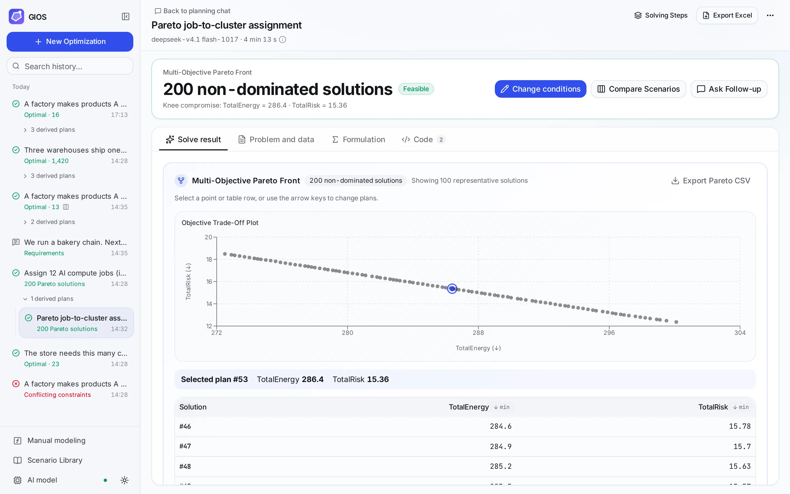

The result page brings the plan, formulation, code and solving process together. The top shows the objective, solver status and number of decision variables; below it you can read the explanation, inspect every variable or export the result.
Navigate from summary to detail#
| Area | Content | Action |
|---|---|---|
| Summary | Objective, status and decision count; an objective trend when solved several times | Change conditions, Compare Scenarios, Ask Follow-up |
| Solve result | Plan explanation and key decision table | Understand the main decisions |
| Raw variables and solver log | Groups, lists, two-index matrices and the solver log (collapsed) | Filter values and download CSV |
| Problem and data | Saved statement and attachments | Review the input snapshot |
| Formulation | Mathematical expressions | Read versions and differences |
| Code | Native-library implementation | Inspect variables, objective and rules |
| Solving Steps | Stage calls, artifacts and feedback | Inspect artifacts, errors and revisions |

Read a concrete result#
The production example has A=3, B=2 and profit 13. Labels connect quantities to products and units; complete variables retain original names for code inspection.
Two-index variables form matrices, useful for employee-by-day or warehouse-by-store plans. List view exposes original names. Filtering helps locate a person, product or time period.
For multi-objective runs solved with AutoCO (NSGA-II, MOEA/D, or NSGA-III), the results view renders an interactive Pareto front scatter plot highlighting the recommended Knee Point. Click any point on the chart or row in the table to inspect its decoded decisions and export them.

Choose an export#
| Export | Contents | Use |
|---|---|---|
| Excel: solution sheet | Every variable including zeros, labels, units and original names | Execution and further analysis |
| Excel: problem and conditions sheet | Statement, changes, original input, attachment names, settings and links | Trace inputs |
| CSV | Complete variable values | Spreadsheet or script processing |
| Markdown report | Problem, settings, result, formulation, code and notes | Reading, archiving and discussion |
“Export Excel” downloads both sheets. “More → Export report (Markdown)” creates the report. Markdown displays up to 500 nonzero variables; Excel and CSV retain all values.
Explanation and complete values#
The run preset produces labels, units and short explanations; numerical cells read solver values. With up to 100 variables the explanation reads all of them, zeros included; larger results are shortened. Use “Raw variables and solver log” and the exports for all data. Explanation language follows the interface at run start.
“Run details” under the title shows the preset, method, actual backend, time and usage. To inspect an intermediate model, open “Solving Steps” at the top right.
Continue from a result#
“Change conditions” creates a new plan and comparison. “Compare Scenarios” computes alternatives from the current plan. “Ask Follow-up” opens the assistant beside the result. Query a schedule first, then request changed conditions.
Drag or keyboard-adjust dividers to resize process and assistant panels. Closing a side panel returns the main area to full width.
Watch the workflow#
The recording shows the production result, two minimum-demand scenarios and data editing. Use captions, pause and fullscreen controls.
Read the transcript
- Enter a production problem in manual modeling and solve it.
- Review the computed plan: A = 3, B = 2, total profit 13.
- Enter two scenarios: at least 3 units of B, and at least 4.
- Compare from one baseline: original profit 13; scenario profits 12 and 8.
- Open an attachment and inspect its fields and values.
- Edit A's unit profit and save the attachment to the draft.